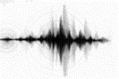

<div class="col graph3"  ng-controller="graph_ctrl_3">
<div class="row banner">
    <div class="col">
        <div class="row">
            <div class="col col-2"></div>
            <div class="col">fft analysis</div>
        </div>
    </div>
    <div class="col">
        <div class="row">
            <div class="col">vibration</div>
            <div class="col">acceleration</div>
        </div>
    </div>
</div>
<div class="row">
    <div class="col">
        <canvas id="graph3" 
        class="chart chart-line" 
        chart-data='data' 
        chart-labels="labels" 
        chart-backgroundColor="color"
        chart-dataset-override="datasetConfig"
        chart-options="option"
        height="230"
        ></canvas>
    </div>
</div>
<div class="row">
    <div class="col">
        <div class="form-group">
            <div class="form-check">
                <input type="checkbox" class="form-check-input" id="check1">
                <label class="form-check-label" for="check1">X-axis</label>
            </div>
            <div class="form-check">
                <input type="checkbox" class="form-check-input" id="check2">
                <label class="form-check-label" for="check2">y-axis</label>
            </div>
            <div class="form-check">
                <input type="checkbox" class="form-check-input" id="check3">
                <label class="form-check-label" for="check3">z-axis</label>
            </div>
        </div>
    </div>
</div>
</div>